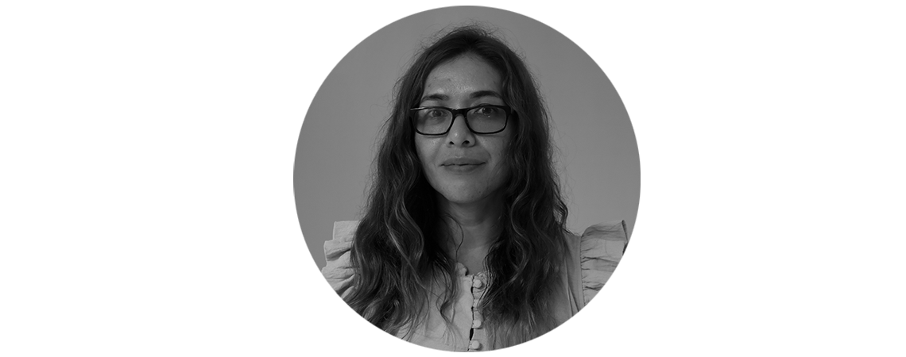

Dr. Gabriel Gutiérrez
Doctorado en Ciencias Políticas y Sociales (orientación Sociología), Maestría en Comunicación, Licenciatura en Ciencias de la Comunicación.
Contacto: ggjavan@huatulco.umar.mx
Dr. Israel Morales
Licenciatura en Biblioteconomía, Maestría en Historia y Etnohistoria, Doctorado en Historia, Miembro del SNII, Líneas de investigación actuales: Historia social, siglo XIX Historia de Oaxaca: liberalismo, café, educación y economía.
Contacto: israelmorales@huatulco.umar.mx
Dr. Jorge Alberto Meneses
Licenciatura en Antropología Social, Maestría en Sociología Política, Doctorado en Estudios Latinoamericanos, SNI I, Líneas de investigación actuales: Juventudes en América Latina, Métodos y Culturas Digitales, Antropología del Deporte, Culturas Populares.
Contacto: jogem@huatulco.umar.mx
jorgemenecs@hotmail.com

Dra. María Teresa López
Licenciatura en Ciencias de la Comunicación, Maestría en Estudios Latinoamericanos, Doctorado en Educación, Miembro del SNII, Líneas de investigación actuales: Cine, Educomunicación, Cultura organizacional, Turismo cinematográfico, Estudios oaxaqueños.
Contacto: mariateresal@huatulco.umar.mx
Dra. Silvia Patricia Paredes
Pos-doctorado en la Universidad del Papaloapan con línea de investigación en emprendimiento femenino en la región de la Chinantla Baja, Doctorado en Ciencias en Desarrollo Regional y Tecnológico, Maestría en Ciencias en Desarrollo Regional y Tecnológico, Licenciatura en Ingeniería en Diseño, Miembro del SNII.
Contacto: patricia@huatulco.umar.mx
Mtra. Estefanía Guadalupe Luna
Licenciatura en Ciencias de la Comunicación, Maestría en Antropología Visual y Documental Antropológico, Líneas de investigación actuales: Estudios afromexicanos Antropología visual, Antropología de la Comunicación.
Contacto: fanitchen@gmail.com

Mtra. Iztacxochitl Adela Alarcón
Maestría en Comunicación, Licenciatura en Ciencias de la Comunicación, Líneas de investigación actuales: Identidad, Historia oral y análisis del discurso.
Contacto: adela.alarcon@aulavirtual.umar.mx
Mtra Madai Quiroz
Maestría en Comunicación, Licenciatura en Sociología, Líneas de investigación actuales: Apropiación social tecnológica y tercer sector, Afectos y experiencias corporales en las relaciones entre humanos y no humanos.
Contacto: madai@aulavirtual.umar.mx
Mtra. Sonia López
Licenciatura Ciencias de la Comunicación, Maestría en Filosofía de la Ciencia, Líneas de investigación actuales: Comunicación del conocimiento.
Contacto: sonial@huatulco.umar.mx
Mtro. Gabriel Garduño
Maestría en Educación con especialidad en Comunicación, Líneas de investigación actuales: Medios tradicionales de comunicación, Producción audiovisual, Nuevas tecnologías de Información y Comunicación
Contacto: ggarduno@huatulco.umar.mx
Mtro. Mario Alberto Gómez
Licenciatura en Artes Visuales, Maestría en Artes Visuales, Líneas de investigación actuales: Imaginarios comunes entre arte y ciencia, Interculturalidad y estética, Comunicación visual y desarrollo regional.
Contacto: marioalb@huatulco.umar.mx
Lic. José Manuel Tenorio
Licenciatura en Periodismo y comunicación colectiva, Líneas de investigación actuales: Historia y comunicación, Historia de los medios de comunicación, Divulgación científica, Comunicación transmedia.
Contacto: matensa@huatulco.umar.mx